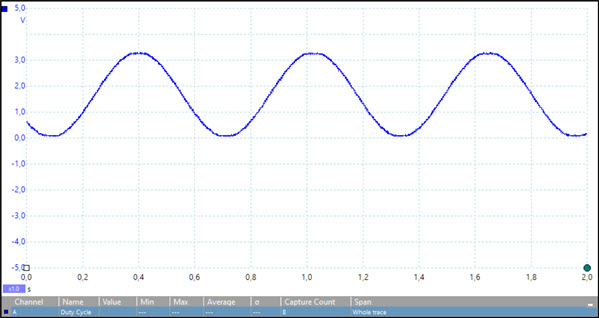
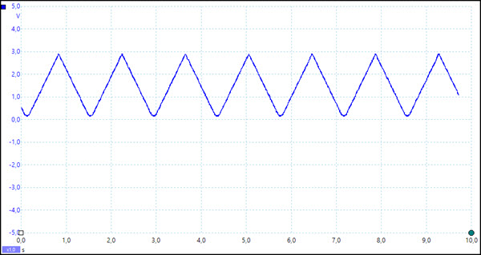
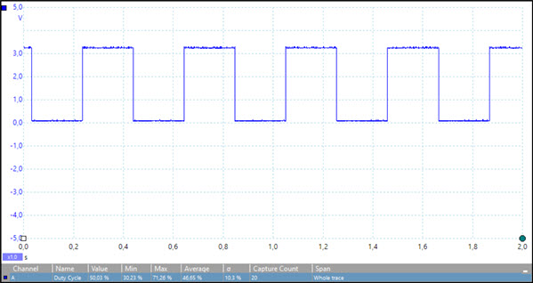

All what you've always wanted to know about DAC
This beginner document will explain what is DAC and how to properly use it with concrete examples using .NET nanoFramework. You're in a perfect place if you want to have analogic work done and creating analogic values from a pin.
A bit of theory
In the world of microcontrollers (MCU), a Digital-to-Analog Converter (DAC) serves as a component that performs the opposite function of an ADC (Analog-to-Digital Converter). The DAC takes digital data from the MCU and converts it into an analog signal. This analog signal is then utilized to produce an output that can vary in voltage, current, or another analog form.
DACs are pivotal in scenarios where the MCU needs to interact with analog systems, such as generating audio signals, controlling motors, regulating voltage levels, or producing variable voltages for sensors. They allow the MCU to convert digital information into analog signals, enabling the control and manipulation of analog components or systems.
A bit of electronics theory
DAC are complex electronic circuits and are not found on every pins, usually they are reserves for fes pins. They are using as most things the Ohms law and summing the voltage divided by the invert of the bit level resistor.
Iy can be summarize as an equivalent electronic schema like this:
Long story short and math short, when applying in this logical schema for a 4 bytes ADC convertor, each resistor power adds up with an operational amplifier and you will get the Vout as a result.
This electronic representation is one of the possible. There are other possible more precise like R-2R ladder circuit. They have all the same goal: from a digital input translated into bits creating an analogic representation.
Here, as you can see in the example, you have a resolution in bits. The high the number is, the more precise the resolution is. In out simple example, a 4 bits resolution will represent a poor 16 different values between negative and positive and positive reference voltage. If like most sound sound cards, you go for 16 bits, you'll already get 65536 possible values!
Note
If you want to use higher voltages you have to use a voltage level shifter or equivalent. This device will transform your applied voltage to another one, usually higher. Now, be careful in the choice as the response time for such device can be slow and only tolerate small changes. So chose them wisely depending on your usage.
DAC in practice
Most of the time you will use DAC to represent a signal that is not a simple square one as for this you have better opportunities like PWM. You can for example represent sinusoidal, triangles and even more!


And a nice traditional square because, yes, you can do it!

The core elements to create a DAC square shape uses:
DacController dac = DacController.GetDefault();
// open channel 0
DacChannel dacChannel = dac.OpenChannel(0);
// get DAC resolution
dacResolution = dac.ResolutionInBits;
int timeResolution = 5;
int value = 0;
int upperValue;
int periodCounter = 0;
int halfPeriod;
// get upper value from DAC resolution
upperValue = (int)Math.Pow(2.0, dacResolution);
// figure out an expedite way to get a more or less square wave from the DAC and time resolution
halfPeriod = ( upperValue / (timeResolution * 10) ) / 2;
while(true)
{
if (periodCounter == halfPeriod)
{
// tweak the value so it doesn't overflow the DAC
value = upperValue - 1;
}
else if (periodCounter == halfPeriod * 2)
{
value = 0;
periodCounter = 0;
}
channel.WriteValue((ushort)value);
//Output the current value to console when in debug.
Debug.WriteLine($"DAC SquareWave output current value: {value}");
Thread.Sleep(timeResolution);
periodCounter++;
}
If you compare with ADC, this code is a bit more complex. This is related to the fact that ADC only reads data while DAC is actually producing them. So if you want to create something with them, you have to create it and it can take quite some code for it!
How to use DacController and DacChannel
As shown in the previous example the DacController allows to select a controller representing DAC. Some boards may have multiple ones. Its role is mainly to open DAC pins. Those are called channels.
Note
You need to refer to the documentation of your MCU to understand which channel to use. There may not be the same number as the pin number.
The ResolutionInBits will give you the resolution of the DAC.
The DacChannel class represent the pin itself. The main function to use is WriteValue which takes a ushort which is a 16 bits data type. So values goes from 0 (representing low, 0) to 65535 (representing high, 1). Depending on your MCU, the resolution may be lower than this one.
DAC specific challenges
There are few important challenges to understand and take into account when using DAC.
The output of a DAC is usually a fraction of a reference voltage (Vref) or a range of voltage with a Vrefmin and Vrefmax, which can be an internal reference voltage or an externally supplied one. The Vrefmin and Vrefmax will allow you to set for example -5 V for the Vrefmin and +5 V for the Vrefmax. The accuracy of this reference voltage can affect the accuracy of the DAC's output. Always check your MCU datasheet to understand how to best use this.
The speed at which a DAC can update its output can be a limiting factor in some applications. This is often defined by the DAC's settling time, which is the time it takes for the output to settle within a specified error band following a change in the input. And it is also restricted by how fast you can call the function to change the values.
GitHub Copilot: The specific challenges of using a Digital-to-Analog Converter (DAC) can include:
All DACs introduce some amount of noise and distortion into their output signals. This can be a significant issue in sensitive applications, such as audio or high-precision measurement systems.
As you're generating the signal, creating complex waveforms can require more complex code compared to reading data with an ADC.